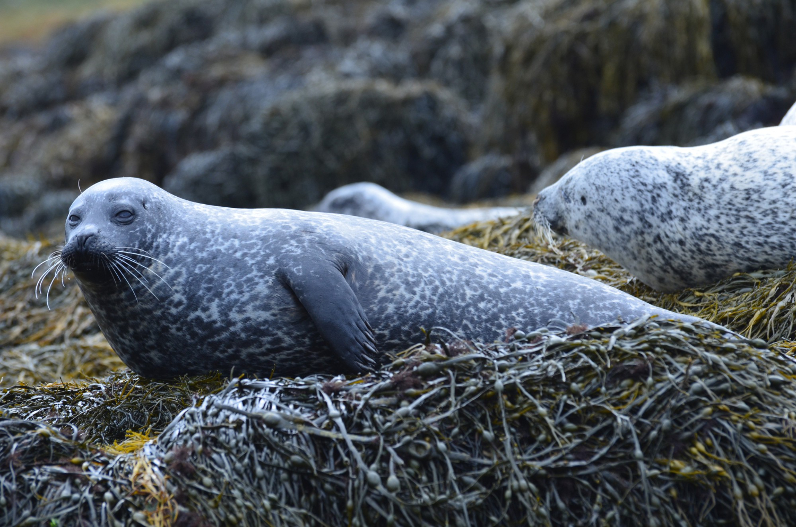

Spotting the Differences
At first glance, seals and sea lions look very similar. Both are marine mammals with flippers, whiskers, and playful personalities. But they have some key differences!
Seals have small ear holes and move by wriggling on their bellies. Their flippers are short, which makes them clumsy on land but fast in water.

Sea lions have visible ear flaps and long, strong front flippers. They can "walk" on land by rotating their back flippers and often make loud barking sounds.